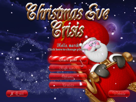

Christmas Eve Crisis
Dieser Artikel wurde für die folgenden Ubuntu-Versionen getestet:
Ubuntu 14.04 Trusty Tahr
Zum Verständnis dieses Artikels sind folgende Seiten hilfreich:
 Christmas Eve Crisis
Christmas Eve Crisis  ist ein Jump'n Run-Spiel von InterActions Studios. Nach der Bruchlandung mit der neuesten und zeitsparendensten Technologie von ACME - einem mit Kipprotoren ausgerüsteten Schlitten, muss man als Weihnachtsmann die über die ganze Erde verstreuten Präsente wieder einsammeln - jedoch hat man nur bis zum Morgen des Heiligabends Zeit das Chaos zu beseitigen. Glühwürmchen, Eulen und andere Gefahren lassen den Zeitplan arg ins Wanken geraten während der freundliche alte Mann in den Leveln nach den Geschenken sucht um diese der richtigen Adresse zuzustellen. Neben den Geschenken warten weitere Boni, z.B. geheime Bereiche, in den 10 Leveln. Eine Highscore-Tabelle zeigt die besten Spieler an.
ist ein Jump'n Run-Spiel von InterActions Studios. Nach der Bruchlandung mit der neuesten und zeitsparendensten Technologie von ACME - einem mit Kipprotoren ausgerüsteten Schlitten, muss man als Weihnachtsmann die über die ganze Erde verstreuten Präsente wieder einsammeln - jedoch hat man nur bis zum Morgen des Heiligabends Zeit das Chaos zu beseitigen. Glühwürmchen, Eulen und andere Gefahren lassen den Zeitplan arg ins Wanken geraten während der freundliche alte Mann in den Leveln nach den Geschenken sucht um diese der richtigen Adresse zuzustellen. Neben den Geschenken warten weitere Boni, z.B. geheime Bereiche, in den 10 Leveln. Eine Highscore-Tabelle zeigt die besten Spieler an.
Das Spiel kann wahlweise mit der Tastatur oder einem Joystick gespielt werden.
|  | ||
| Hauptmenü | Spieleszene | Spieleszene |
Installation¶
Das Spiel von interactionstudios.com  oder holarse-linuxgaming.de herunterladen und in das Homeverzeichnis, z.B. nach ~/Spiele/ChristmasEveCrisisInstallerVERSION, entpacken [1].
oder holarse-linuxgaming.de herunterladen und in das Homeverzeichnis, z.B. nach ~/Spiele/ChristmasEveCrisisInstallerVERSION, entpacken [1].
Anschließend in das Installationsverzeichnis wechseln und das Spiel mit Game_Launcher starten [2]. Ein Menüeintrag [3] kann vorgenommen werden.
Der Weihnachtsmann wird entweder mit der Tastatur oder einem Joystick bewegt. Die Steuerung ist frei konfigurierbar.
Optionen¶
Die Einstellungen können unter dem Menüpunkt "Options" vorgenommen werden:
| Options | |
| Unterpunkt | Kurzbeschreibung |
| "Gameplay" | Tutorials, Hilfe und Tips können aktiviert, die verstrichene Zeit ein-/ausgeblendet werden und der Cheatmodus (de)aktiviert werden. |
| "Controls" | Die Grundeinstellungen der Tasten- und Joystickbelegung den eigenen Bedürfnissen entsprechend anpassen. |
| "Graphics" | Feineinstellungen an der Auflösung, der Detailschärfe, den Filtern ... vornehmen. |
| "Sound" | Lautstärke der Musik und der Effekte regeln, die Qualität ändern oder die Musik aus- bzw. anschalten. |
Tastenkürzel¶
| Tastenkürzel | |
| Taste(n) | Funktion |
| ← + → | Weihnachtsmann steuern |
| ↑ | Springen |
| Benutzen / Tragen | |
| ⏎ | Statistiken anzeigen |
| M | Karte |
| Esc | Spielemenü / Pause |
| Cheats | |
| F5 | Levelkarte aufdecken. |
| F6 | Doppelter Sprung beim erneuten Drücken von ↑ . |
| F7 | Unbesiegbarkeit gegenüber Tieren und Schäden durch die Umwelt. |
| F8 | Automatisch eine Geschenk zur Anzeige mit den gelieferten Sendungen hinzufügen. |
Problemlösungen¶
Steuerung¶
Sofern der Weihnachtsmann immer selbstständig ohne Tastendruck in eine Richtung läuft sollten die Einstellungen der Steuerung kontrolliert werden u.a. unter "More Controls" die Einstellungen des Joysticks "gelöscht" bzw. geändert werden.

Infobox¶
| Christmas Eve Crisis | |
| Originaltitel: | Christmas Eve Crisis |
| Genre: | Jump'n Run |
| Sprache: | |
| Veröffentlichung: | 2009 |
| Publisher: | InterAction studios |
| Systemvoraussetzungen: | 600MHz - 256MB RAM - OpenGL-fähige Grafikkarte |
| Medien: | Download |
| Strichcode / EAN / GTIN: | |
| Läuft mit: | nativ |
- Erstellt mit Inyoka
-
 2004 – 2017 ubuntuusers.de • Einige Rechte vorbehalten
2004 – 2017 ubuntuusers.de • Einige Rechte vorbehalten
Lizenz • Kontakt • Datenschutz • Impressum • Serverstatus -
Serverhousing gespendet von